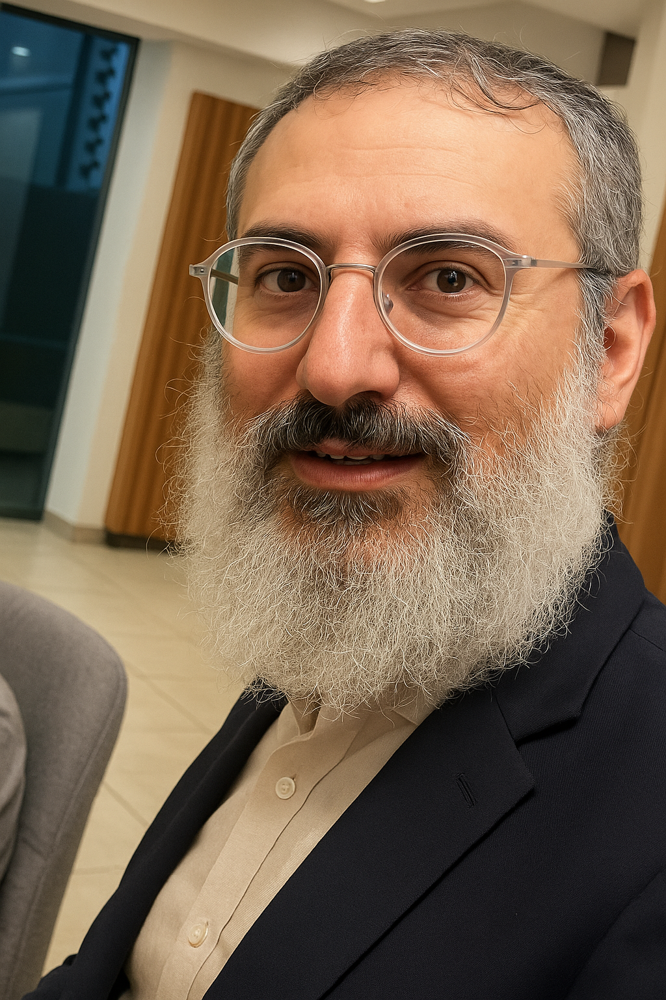
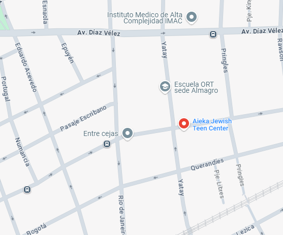

Sede Ort Belgrano

En el corazón del barrio de Belgrano, en la sede Montañeses de ORT, Aieka Jabad encontró un espacio fértil para florecer y acompañar. Lo que comenzó como una propuesta puntual para acercar el judaísmo a los estudiantes, hoy es una comunidad viva, vibrante, que respira identidad, valores y sentido de pertenencia. En Aieka Belgrano no solo enseñamos sobre judaísmo: lo vivimos. Creamos un entorno donde cada joven puede sentirse orgulloso de su herencia, curioso por su historia y comprometido con su presente. A través de clases dinámicas, espacios de escucha, celebraciones tradicionales y actividades creativas, fomentamos una conexión genuina entre los chicos y su identidad judía. Más allá del contenido curricular, lo que nos define es el vínculo. El equipo de Aieka Belgrano acompaña de cerca, con sensibilidad, respeto y alegría. Sabemos que cada joven es único, y por eso construimos experiencias que hablan en su idioma, que conectan con sus intereses y que despiertan preguntas reales. Las festividades judías se viven con sentido y emoción. Los valores se transmiten con naturalidad. Y el judaísmo se convierte en algo cercano, que inspira y que deja huella. Aieka en Belgrano no es solo un espacio educativo: es un hogar espiritual dentro del colegio, un refugio de identidad, un lugar donde las raíces y las alas crecen al mismo tiempo.
El creador
Detrás de cada proyecto con alma, hay una persona que sueña, que insiste y que cree. Aieka Jabad no es la excepción. Su creador, más allá de su rol institucional, es un líder con una visión profunda: la de acercar el judaísmo a los jóvenes desde un lugar genuino, vivencial, cálido y transformador. “No saben cuánto he sacrificado”, suele decir con una mezcla de ironía y verdad. Y es que construir una propuesta educativa con identidad en un entorno escolar no es tarea sencilla. Requiere paciencia, empatía, estrategia y, sobre todo, amor. Amor por los chicos, por la tradición, por la educación y por el pueblo judío. Su objetivo nunca fue simplemente enseñar mitzvot o recitar textos: fue, y es, despertar almas. Que cada joven, sin importar su punto de partida, encuentre en Aieka un espacio donde se sienta visto, valorado e inspirado a conectar con lo que lleva adentro. Que el judaísmo deje de ser una materia, y pase a ser una parte viva de su historia personal. El creador de Aieka construyó mucho más que un programa: formó una comunidad. Una red de vínculos, de momentos compartidos, de aprendizajes mutuos. Una familia extendida que trasciende aulas, calendarios y generaciones. Su legado no está solo en lo que enseñó, sino en las sonrisas, los vínculos, las decisiones y las convicciones que cada chico se lleva cuando pasa por Aieka.
Sede Ort Almagro
La sede de Aieka Jabad en ORT Yatay es una apuesta por el encuentro, la escucha y el acompañamiento. En el marco de un colegio con una comunidad diversa y plural, Aieka se posiciona como un faro de tradición, de pertenencia y de espiritualidad para quienes buscan conectar con su judaísmo desde un lugar auténtico y cercano. Nuestra propuesta no impone: propone. Propone una mirada del judaísmo que es moderna pero fiel a su esencia, profunda pero accesible, comprometida pero flexible. En Yatay creamos espacios donde los chicos pueden preguntar, debatir, emocionarse, y, sobre todo, descubrir que su identidad judía puede ser una fuente de fuerza, alegría y sentido. Celebramos las festividades con creatividad y participación, integramos valores en la vida cotidiana escolar y construimos puentes entre la historia del pueblo judío y las realidades que viven los jóvenes hoy. Entendemos que fortalecer la identidad no se trata solo de transmitir conocimiento, sino de generar experiencias significativas que dejen marca. Aieka en Yatay es comunidad. Es cercanía. Es una presencia constante que acompaña con amor, coherencia y visión. Es un equipo que entiende que educar es también cuidar, contener e inspirar. Y es la certeza de que cada semilla sembrada hoy puede convertirse en el árbol que cobije y sostenga a las generaciones del mañana.